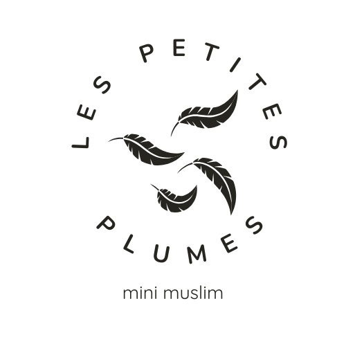

Être patient pendant le jeûne, c'est un cadeau pour Allah !
🌟 Le Sabr, qu'est-ce que c'est ?
Le Sabr (الصبر) signifie patience en arabe. C'est l'une des vertus les plus importantes en Islam. Allah dit dans le Coran : "Ô vous qui croyez ! Cherchez le secours dans la patience et la prière. Car Allah est avec les patients" (Coran 2:153). Le Ramadan est le mois du Sabr par excellence — chaque heure de jeûne est une école de patience ! 🌙
Le mot Sabr et ses dérivés apparaissent plus de 90 fois dans le Coran ! Allah aime tellement les patients qu'Il a dit : "Annonce la bonne nouvelle aux patients, qui, lorsqu'un malheur les touche, disent : Nous sommes à Allah et c'est à Lui que nous retournons" (Coran 2:155-157). La patience, ce n'est pas juste attendre — c'est tenir bon avec foi, sans se plaindre, en sachant qu'Allah voit nos efforts. Le Prophète a dit : "Comme c'est étonnant l'affaire du croyant ! Tout ce qui lui arrive est bien pour lui" (Sahih Muslim 2999). 💛
Les savants nous apprennent qu'il y a trois formes de Sabr ! La première est la patience dans l'obéissance à Allah — faire ses prières même quand on est fatigué, jeûner même quand on a faim. La deuxième est la patience face aux épreuves — ne pas se mettre en colère quand quelque chose nous contrarie. La troisième est la patience pour éviter ce qu'Allah interdit — résister à la tentation. Le Ramadan nous entraîne dans ces trois formes à la fois ! C'est pour ça qu'on appelle le Ramadan le mois du Sabr. 🌿
Allah promet quelque chose d'extraordinaire aux patients ! Il dit : "Les patients recevront une récompense sans limites" (Coran 39:10). Sans limites ! Imagine une récompense tellement grande qu'on ne peut même pas la compter. Et pour le jeûne spécifiquement, Allah dit dans le Hadith Qudsi : "Le jeûne est pour Moi et c'est Moi qui en récompense" (Sahih Bukhari 1904). Cela veut dire qu'Allah Lui-même, avec toute Sa générosité infinie, récompense personnellement chaque heure de patience pendant le jeûne ! 🌟
Voici comment être patient chaque jour ! Quand tu as faim ou soif, dis : "Je jeûne pour Allah, et Il me récompensera". Quand quelqu'un te provoque, rappelle-toi que le Prophète disait : "Je jeûne, je jeûne" et s'éloignait. Quand tu es fatigué, pense à la récompense qui t'attend. Quand tu as envie de te mettre en colère, dis "A'udhu billah" et respire. Quand quelque chose de difficile arrive, dis "Inna lillahi wa inna ilayhi raji'un". Chaque moment de patience est un trésor que tu déposes pour l'Éternité ! ✨
Bravo d'avoir terminé le Jour 10 ! 🌟
N'oublie pas : chaque moment de patience est un trésor pour l'Éternité !
Dis "Alhamdulillah" et tiens bon ! 💪
Rendez-vous demain pour le Jour 11 !